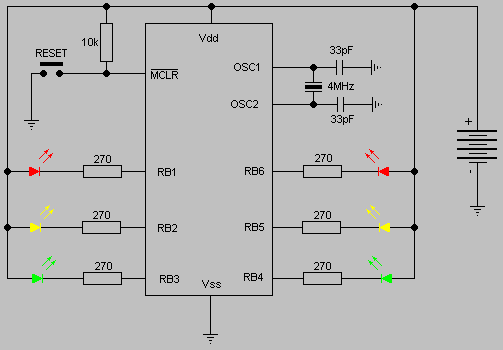

Światła uliczne na PIC16F84
Program steruje modelem-zabawką świateł ulicznych. Zabawka była projektowana dla małych dzieci (poniżej 3 lat) i dużo czasu zajęło mi wymyślenie najlepszego sposobu włączania i wyłączania urządzenia.
Po długich przemyśleniach doszedłem do wniosku, że dziecko poradzi sobie z włączeniem zabawki ale raczej nie będzie pamiętało o jej wyłączeniu. Postanowiłem więc programowo usypiać mikrokontroler po odpowiednim czasie od momentu rozpoczęcia zabawy. Zabawka ma tylko jeden przycisk niestabilny (duży i odporny na działanie sił zewnętrznych), który posiada tylko jeden styk zwierny. Tym stykiem zwieramy wyprowadzenie MCLR mikrokontrolera do masy i powodujemy sprzętowy reset urządzenia. Po resecie program startuje i zaczyna się zabawa. Gdy minie ok. 8 minut (16 cykli zmiany świateł) w programie nastąpi przejście do rozkazu SLEEP i mikrokontroler wejdzie w stan uśpienia. W tym stanie pobór prądu ze źródła zasilania jest tak mały, że można o nim zapomnieć. W oryginale zastosowałem trzy akumulatorki NiCd połączone szeregowo i uznałem, że ich prąd samorozładowania jest porównywalny z prądem pobieranym przez uśpiony mikrokontroler. Zamiast akumulatorków polecam zastosować baterię płaską 3R12 o napięciu 4,5 V, która powinna wystarczyć na kilka miesięcy zabawy.
Diody LED są sterowane bezpośrednio z poszczególnych linii portu B. Jestem zwolennikiem sterowania urządzeniami zewnętrznymi za pomocą stanu niskiego na wyjściu portu. Stan nieaktywny reprezentowany jest przez wysoką impedancję linii portu. Taki sposób sterowania powoduje, że do zapalania i gaszenia diod wykorzystuję rejestr TRISB a nie PORTB. Zgaszona dioda podłączona do linii portu oznacza, że odpowiedni bit rejestru TRIS ustawiony jest w stan 1 (linia jest w stanie wysokiej impedancji). Wewnętrzne rezystory podciągające linie portu B nie są wykorzystywane.
Aby zapalić diodę ustawiamy odpowiednią linię portu w stan niski i pozwalamy, by prąd popłynął od plusa zasilania przez diodę i rezystor ograniczający prąd do portu mikrokontrolera. Linię przełączamy w stan wyjściowy wpisując 0 do odpowiedniego bitu rejestru TRISB i rejestru PORTB.
Do prawidłowego działania program musi w jakiś sposób odliczać opóźnienia czasowe. Można to zrobić na kilka sposobów. Najprostszy sposób to zastosowanie pustych pętli opóźniających ale ja wybrałem inną drogę. Wykorzystałem w tym celu sprzętowy licznik 8-bitowy i preskaler. Po podzieleniu zegara systemowego przez 256 w preskalerze i doprowadzeniu go do licznika uzyskujemy przerwanie po każdym przepełnieniu rejestru RTCC. W obsłudze przerwania ładujemy wartość początkową 12 do rejestru RTCC, więc przepełnienie następuje po zliczeniu 244 impulsów. Jak łatwo policzyć przerwanie będzie wywoływane co około 1/16 sekundy (dokładnie co 0.062464 sek.). Jeśli w obsłudze przerwania umieścimy rozkaz inkrementujący wartość jakiejś zmiennej (w tym przypadku jest to zmienna Licznik) to możemy łatwo sprawdzić ile czasu upłynęło od momentu wyzerowania tej zmiennej do dowolnej chwili z dokładnością do 1/16 sekundy.
A oto treść programu w języku assemblera PIC16F84:
;--------------------------------------------------------------------------
; Program steruje modelem sygnalizacji swietlnej na skrzyzowaniu ulic.
; Jest to zabawka dla moich dzieci z okazji ukonczenia 2 i 3/4 roku zycia.
; Po 16 cyklach zmiany swiatel, co trwa ok. 8 minut, uklad przechodzi
; w stan uspienia.
; Mikrokontroler jednoukladowy PIC16F84 pracuje z kwarcem 4 MHz.
; Autor programu: Jacek Porembiński
; Pierwsza wersja z dnia 10 czerwca 2002 r.
; Data ostatniej modyfikacji: 15 sierpnia 2002 r.
;
;--------------------------------- Main declarations
list P=PIC16f84
include <p16f84.inc>
;--------------------------------- General Purpose Registers, user defined
w_copy equ 0x0C ; kopia akumulatora
s_copy equ 0x0D ; kopia rejestru STATUS
Licznik equ 0x0E ; licznik czasu (wartosc biezaca)
Playtime equ 0x0F ; licznik czasu trwania zabawy
;--------------------------------------------------------------------------
__CONFIG _CP_OFF & _WDT_OFF & _PWRTE_OFF & _XT_OSC
org 0x000
goto Start
;--------------------------------- Subroutines
org 0x004 ; Handler obslugi przerwania
; zegarowego
bcf INTCON,02H ; skasuj bit sygnalizujacy przerwanie
movwf w_copy ; wykonaj kopie rejestru W
movf STATUS,W
movwf s_copy ; wykonaj kopie rejestru statusu
movlw .12 ; zaladuj wartosc poczatkowa do RTCC taka,
movwf TMR0 ; by przerwanie wystepowalo co 1/16 sekundy.
incf Licznik,F ; zwieksz licznik o 1
movf s_copy,W ; zaladuj kopie STATUS'u do akumulatora
movwf STATUS ; odtworz STATUS
swapf w_copy,F ; a to sztuczka pozwalajaca zaladowac
swapf w_copy,W ; do akumulatora jego kopie bez naruszenia
retfie ; rejestru STATUS'u
;
;-------------------------------------------------------------------------
; Subroutine Delay_2 (opoznienie 2 sek.) |
;-------------------------------------------------------------------------
;
Delay_2
clrf Licznik ; Wyzeruj uplyw czasu
Del2 movf Licznik,W ; zaladuj Licznik do W
sublw 0x20 ; odejmij 32
btfss STATUS,Z ; czy wynik rowny zero?
goto Del2 ; nie, czekaj...
return
;
;-------------------------------------------------------------------------
; Subroutine Delay_3 (opoznienie 3 sek.) |
;-------------------------------------------------------------------------
;
Delay_3
clrf Licznik ; Wyzeruj uplyw czasu
Del3 movf Licznik,W ; zaladuj Licznik do W
sublw 0x30 ; odejmij 48
btfss STATUS,Z ; czy wynik rowny zero?
goto Del3 ; nie, czekaj...
return
;
;-------------------------------------------------------------------------
; Subroutine Delay_10 (opoznienie 10 sek.) |
;-------------------------------------------------------------------------
;
Delay_10
clrf licznik ; Wyzeruj uplyw czasu
Del10 movf Licznik,W ; zaladuj Licznik do W
sublw 0xA0 ; odejmij 160
btfss STATUS,Z ; czy wynik rowny zero?
goto Del10 ; nie, czekaj...
return
;***********************************************
;* Glowna czesc programu *
;***********************************************
Start
bsf STATUS,RP0 ; Ustawienie strony 1
movlw b'11111111' ; Ustaw port B jako wyjscie
movwf TRISB ^ 0x080
movlw b'11111111' ; Ustaw port A jako wejscie
movwf TRISA ^ 0x080
movlw b'10000111' ; Prescaler do RTCC i dzieli /256
movwf OPTION_REG ^ 0x080
bcf STATUS,RP0 ; Powrot do strony 0
movlw 0x0A0 ; Odblokowanie przerwan
movwf INTCON
movlw .16 ; Ustaw czas zabawy na 16 cykli
movwf Playtime
Cykl
; ---------------------------------------------------------------------
; | A B A B |
; | Czerwone o . RB1 RB6 |
; | Zolte . . RB2 RB5 |
; | Zielone . o RB3 RB4 |
; | |
; ---------------------------------------------------------------------
movlw b'11101101' ; Ustaw RB1 i RB4 rowne 0
movwf PORTB ; i wpisz do portu B
bsf STATUS,RP0 ; Ustawienie strony 1
movlw b'11101101' ; Ustaw RB1 i RB4 jako wyjscie
movwf TRISB ^ 0x080 ;
bcf STATUS,RP0 ; Wroc na strone 0
call Delay_10 ; Odczekaj 10 sekund
; ---------------------------------------------------------------------
; | A B A B |
; | Czerwone o . RB1 RB6 |
; | Zolte . o RB2 RB5 |
; | Zielone . . RB3 RB4 |
; | |
; ---------------------------------------------------------------------
movlw b'11011101' ; Ustaw RB1 i RB5 rowne 0
movwf PORTB ; i wpisz do portu B
bsf STATUS,RP0 ; Ustawienie strony 1
movlw b'11011101' ; Ustaw RB1 i RB5 jako wyjscie
movwf TRISB ^ 0x080 ;
bcf STATUS,RP0 ; Wroc na strone 0
clrf Licznik ; Wyzeruj uplyw czasu
call Delay_3 ; Odczekaj 3 sekundy
; ---------------------------------------------------------------------
; | A B A B |
; | Czerwone o o RB1 RB6 |
; | Zolte o . RB2 RB5 |
; | Zielone . . RB3 RB4 |
; | |
; ---------------------------------------------------------------------
movlw b'10111001' ; Ustaw RB1, RB2 i RB6 rowne 0
movwf PORTB ; i wpisz do portu B
bsf STATUS,RP0 ; Ustawienie strony 1
movlw b'10111001' ; Ustaw RB1, RB2 i RB6 jako wyjscie
movwf TRISB ^ 0x080 ;
bcf STATUS,RP0 ; Wroc na strone 0
clrf Licznik ; Wyzeruj uplyw czasu
call Delay_2 ; Odczekaj 2 sekundy
; ---------------------------------------------------------------------
; | A B A B |
; | Czerwone . o RB1 RB6 |
; | Zolte . . RB2 RB5 |
; | Zielone o . RB3 RB4 |
; | |
; ---------------------------------------------------------------------
movlw b'10110111' ; Ustaw RB3 i RB6 rowne 0
movwf PORTB ; i wpisz do portu B
bsf STATUS,RP0 ; Ustawienie strony 1
movlw b'10110111' ; Ustaw RB3 i RB6 jako wyjscie
movwf TRISB ^ 0x080 ;
bcf STATUS,RP0 ; Wroc na strone 0
clrf Licznik ; Wyzeruj uplyw czasu
call Delay_10 ; Odczekaj 10 sekund
; ---------------------------------------------------------------------
; | A B A B |
; | Czerwone . o RB1 RB6 |
; | Zolte o . RB2 RB5 |
; | Zielone . . RB3 RB4 |
; | |
; ---------------------------------------------------------------------
movlw b'10111011' ; Ustaw RB2 i RB6 rowne 0
movwf PORTB ; i wpisz do portu B
bsf STATUS,RP0 ; Ustawienie strony 1
movlw b'10111011' ; Ustaw RB2 i RB6 jako wyjscie
movwf TRISB ^ 0x080 ;
bcf STATUS,RP0 ; Wroc na strone 0
clrf Licznik ; Wyzeruj uplyw czasu
call Delay_3 ; Odczekaj 3 sekundy
; ---------------------------------------------------------------------
; | A B A B |
; | Czerwone o o RB1 RB6 |
; | Zolte . o RB2 RB5 |
; | Zielone . . RB3 RB4 |
; | |
; ---------------------------------------------------------------------
movlw b'10011101' ; Ustaw RB1, RB5 i RB6 rowne 0
movwf PORTB ; i wpisz do portu B
bsf STATUS,RP0 ; Ustawienie strony 1
movlw b'10011101' ; Ustaw RB1, RB5 i RB6 jako wyjscie
movwf TRISB ^ 0x080 ;
bcf STATUS,RP0 ; Wroc na strone 0
clrf Licznik ; Wyzeruj uplyw czasu
call Delay_2 ; Odczekaj 2 sekundy
decfsz Playtime,F ; Czy zakonczyc zabawe?
goto Cykl
movlw b'11111111' ; Ustaw wszystkie linie portu B na 1
movwf PORTB
bsf STATUS,RP0 ; Ustaw strone 1
movlw b'11111111' ; Ustaw caly port B jako wejscie
movwf TRISB ^ 0x080 ; Wpisz powyzsze ustawienia portu B.
bcf STATUS,RP0 ; Wroc na strone 0
movlw b'11111111' ; Ustaw wszystkie linie portu A na 1
movwf PORTA
bsf STATUS,RP0 ; Ustaw strone 1
movlw b'11111111' ; Ustaw caly port A jako wejscie
movwf TRISA ^ 0x080 ; Wpisz powyzsze ustawienia portu A.
bcf STATUS,RP0 ; Wroc na strone 0
sleep ; Dobranoc!
end
A oto schemat ideowy urządzenia:
.
